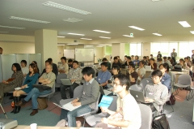
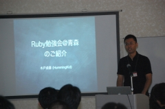
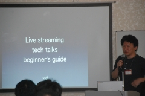
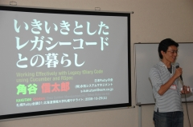
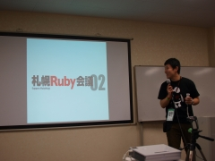

RegionalRubyKaigi レポート (02) 札幌 Ruby 会議 01
RegionalRubyKaigi レポート (02) 札幌 Ruby 会議 01
書いた人: Maimuzo と荒井
はじめに
 10/25 に、全国で 2 回目に当たる Regional Ruby Kaigi である、 札幌 Ruby 会議 01 が開催されました。地方での開催にも関わらず、参加者募集から 1 日で定員に達し、キャンセル待ちも発生するなど、期待の高さを伺わせました。
札幌 Ruby 会議 01 について
- 開催日
- 2008/10/25 (土) 12:00 〜 18:00
- 開催場所
- 北海道情報大学札幌サテライト
- 開催母体
- 札幌 Ruby 会議 01 実行委員会, Ruby札幌
- 後援
- 日本 Ruby の会, LOCAL
- 参加者
- 当日会場を訪れた参加者数:およそ 70 名, 当日配信を閲覧したユニークユーザ数:およそ 70 名
- 動画・資料
- RubyKaigi 日記 (2008-10-28)
- 公式タグ
- sappororubykaigi01（はてなブックマークでの検索結果, はてな RSS での検索結果)
プログラム
「Ruby On Windows」(arton (田島あきお) - 日本 Ruby の会)
: 
Windows 用 Ruby の 1 つの実装である ActiveScriptRuby (ASR) の作者である arton さんが、Ruby を Windows で使うと問題になるであろう点と、それに対して ASR が用意している対策について解説されました。ASR は、COM の HOST として ruby.exe を実行できるようにするもので、Windows 上の様々な機構と Ruby を融合して使うことが可能になります。現在のところ、VC6 でコンパイルして ASR のパッケージを作ることが主流になっていますが、無償のコンパイラが提供された VC8 を使っていくことも可能なようです。
ASR のパッケージには、Win32API、Win32Ole など、Windows 用の Ruby ライブラリがバイナリとして同梱されているのですが、あわせて、Windows 上の「空白を含んでいるかも知れない」パスを shortpathname に置き換える winpath.rb や、Vista の UAC 対策として管理者権限でプログラムを exec できる suexec.rb、その他多数のユーティリティも用意されています。特に Vista では普通には gem が使えなくなってしまったのですが、ASR console から上記機構を使って管理者権限で gem を実行することで、これに対応しています。また、UNIX 上でプロセスが fork されることを想定して書かれているような Ruby のプログラムや、Windows 上で Unicode のテキストに BOM がつけられてしまうことに対しても、Ruby の処理系としてプログラムが正常に動作することが保証されるようになっています。
ASR の面白い使い方として、WSH と HTA での実例が紹介されました。前者は VBScript で記述されたバッチファイルの中で、後者は HTML 内に記述された VBScript の中で、ruby.object を create して、Ruby 処理系の処理を使えるようにするものです。1 つの文字列に対して Ruby と VBScript のメソッドが適用されるソースコードがデモされました。特に後者の HTA で使用する方法は、Windows 上で、コンソールアプリでない (画面付きの) Ruby のプログラムを簡単に作成できる手法として、使い道が色々とありそうです。
arton さん一流の辛口＆ばっさりトークで度々会場は笑いに包まれていました。
「わたしと tDiary 」(柴田博志 (hsbt) - tDiary.org)
: 
わたしと tDiary と題して、tDiary の管理者である柴田さんが、どういう風に tDiary コミュニティと関わり始め、どういう活動を経て管理者となったのか、その経緯を紹介してくださいました。
昔は Ruby は tDiary を動かすために必要な言語と呼ばれたものですが、最近では tDiary のソースは読むな1。と言われたりすることもあり、管理者として悲しい思いもしていたそうです。しかし、 tDiary の開発者であるただただしさんが「 tDiary の価値は長期間にわたってメンテナンスされていることにある」と宣言したことで、自分も納得できたとのことでした。また当初の設計思想である「レンタルサーバに Ruby をインストールしてもらう」という言語の普及戦略についても、現在ではほぼクリアされ、当初の目標は達成されたようです。
柴田さんは、2004 年頃まではレンタルサーバに tDiary をセットアップし、普通に日記を書いたり読んだりしていただけのようですが、2004 年から 2006 年にかけて、tDairy の plugin を作ってはメーリングリストに連投していたのが認められ、 2006 年にはコミッタとなりました。その後は中心メンバーの一人として、 tDiaryParty2.1 などのイベント企画や、開発インフラの改善などに着手。 ITS (仕様) や CodeRepos (実装)、RSpec (テスト) などを導入し、2008 年初頭には admin となりました。admin となった後も、Retrospectiva (タスク) を導入したり、Wiki スパム対策のため Wiki コンテンツ(ドキュメント)を引っ越ししたり、Subversion (実装)を導入したりなど、開発インフラの改善は継続して行っているようです。
最近の話題として、tDiary2.3.1 がリリースされたようで、これは UTF-8 対応や、logger を使ったロギング機能、スパムフィルタをプラグインの様に選択できる SelectFilter など、強力な新機能が次々と実装されています。また、今後の予定としては、Ruby1.9.1 対応、RSpec の core 組み込み、OpenID 認証の対応などを予定しているとのことでした。
最後に、tDiary は 20 年間保守し続けることを目標としていますが、そのためには一緒にやっていく仲間が不可欠ということで、人材募集のお知らせがありました。今のところ、ユーザーサポーター、ドキュメントメンテナ、セキュリティチーム、レガシープラグインのメンテナ、プラットフォーム別のメンテナが特に足りてないとのことなので、興味のある方はメーリングリストなどで手を挙げてみてはいかがでしょうか。
「dRuby and Rinda - その実装と応用を札幌で」(関将俊 - druby.org)
: 
dRuby と Rinda の作者である関さんが、入門編として dRuby と Rinda についてお話ししてくれました。
dRuby とは RMI ( Remote Method Invocation ) を実現するライブラリです。RMI と RPC ( Remote Procedure Call ) は紙一重のようですので、こちらの方がイメージしやすい人も居るかも知れません。RMI とは他のマシンにあるプロセスにメッセージを送り、メソッドを呼び出すことであり、dRuby はこれらをなるべく Ruby っぽく振る舞うように作られています。ただ、Ruby 風になりきれない部分があり、これらをなるべく自然な形で実現するためいろいろ工夫しています。具体的には、引数や戻り値や例外としてプロセス間でオブジェクトが交換されるのですが、Ruby には参照渡ししかなく、これが原因でうまく動かないことがあるため、Marshal 可能なオブジェクトは値渡し (dump)、Marshal 不可能なオブジェクトは参照渡しするアプローチをとっているようです。ただ、明示的にどちらかを指定することも出来るようです。
セッションの途中から、実際に dRuby を使って Hash オブジェクトを共有するハンズオン風デモンストレーションがありました。実際に参加者が端末を 2 つ開き、front 側 (DRb オブジェクトを提供する側) に Hash を用意した上で、クライアント側から要素を追加し、クライアント側・フロント側共に同じ内容が保存されていることを確認する、といった内容でしたが、dRuby は難しいというイメージを持っていた人でも、このデモを見て感覚を掴め、興味を持ったり身近に思えたりした人も多かったのではないでしょうか。
また、Ruby のメーリングリストである[ruby-list:15406]に、初版の dRuby コードが載っているということで、このコードの解説もありました。ちょっとバグもあるようですが、200 行ぐらいなので読みやすく、実装を知ることで応用も利きやすくなると思います。
はてなスクリーンショットや RWiki (In-memory 版 Wiki) では、dRuby が実際に使われているとのことでした。
引き続き、Rinda の紹介がありました。
まず、Linda は並列処理糊言語であり、中央のキュー (タプルスペース) からデータ (タプル) を持ってきたり、逆に書き込んだりすることで並列処理を簡単に実装でき、比較的簡単にスケールさせることが出来るライブラリです。データがないときはブロックしておき、データが入ったらブロックしていたものに渡せる (待ち合わせが簡単に出来る) のが特徴となります。そして、Rinda は Ruby による Linda の実装です。Rinda の特徴は dRuby との相性がよい、タプルを Array で表現する (Hash も使えるけどちゃんとテストされてないらしい) という点です。問い合わせはデータベースへのクエリっぽく書けるものの、あまり大量のタプルを入れておくことは想定してない (むしろ使い方が間違っている) ので、データベースとして使うのはやめた方が良いとのことでした。
Rinda が使われているアプリケーションはあまり有名なものがないらしいのですが、1 世代前の Buzztter では分散クローラからのデータ集約部分に使われていたとのことです。
Lightning Talks
「Ruby1.9 について」 (高橋征義 - 日本 Ruby の会会長 / 株式会社ツインスパーク)
: 
札幌生まれで、東京へ就職された高橋会長からの、札幌でこそ Ruby1.9 をというメッセージ。高橋会長の個人的な札幌時代の思い出を振り返ると、それなりに都会で何でもできるという全能感がありつつも、どこか閉塞感があったとのこと。特に、東京へ行ってから、毎日のようにどこかで勉強会が開かれているような巨大な世界を見てしまうと札幌にいたころの狭さというのをどうしても感じてしまう。
だけど、そういう札幌だからこそ、今、Ruby1.9 を。Ruby1.9 は、過去バージョンとは、それなりの互換性を保ちつつも、それにとらわれすぎず新しいことをやろうとしている。アプリ開発には Ruby1.8 の枯れている形の方が便利なので、どうしてもそちらに人が集まり、Ruby1.9 はまだマイナーな場所になっている。そんなまだ人が少ないところであるからこそ、個人対個人の親近感が強くなり、距離のデメリットが薄まる。札幌のようなところにいる人間にとっては、Ruby1.9 は、すごい人と開発ができるかもしれない、むしろ世界を相手に開発ができるかもしれないチャンスだ、というメッセージでした。
「Ruby 勉強会@青森のご紹介」(木戸貞善 - Ruby 勉強会@青森)
: 
青森から 5 時間半かけてやってきたという木戸さんによる、青森で月 1 回、第 4 土曜日に開いているという Ruby 勉強会の紹介。北東北在住の Ruby ユーザの集まりという位置づけで、できる限り定期的に開催するように続けているとのこと (札幌 Ruby 会議 01 が開催されたのも第 4 土曜日だったので、今月は前週に開催してきたそうです）。
拠点が青森であるということは、「財布にやさしい場所にコミュニティがない」ということだそうです。北東北は県が大きいためどうしても交通費が高くついてしまう。だから、開発者のコミュニティ活動も進まず、「地元で Ruby を使っている人を知らない」という状況ができてしまうとのことです。木戸さん御自身は、Ruby は定型作業をサボるため程度にしか使っていなかったのですが、日本 Ruby 会議への参加を繰り返しているうちに、どうしても青森にもコミュニティを作りたくなり、やっと今年になって立ち上げにこぎつけたとのことでした。
今後の活動課題としても、まだ、コミュニティの情報発信ができていないので、サイトの立ち上げなどをやっていきたいとのこと。木戸さんが、「ニートになれたのでようやく時間をさけるようになった」ということだそうで、近日中に Ruby 勉強会@青森のサイトが立ち上がる予定だそうです。
「Ruby のエラーメッセージを日本語にしよう」(arton (田島あきお) - 日本 Ruby の会)
: 
arton さんによる、NLize という Ruby のエラーメッセージを多国語対応するためのライブラリの紹介。NLize は GitHub で公開中です。ソースコードからメッセージを抽出する仕組みと、ある程度翻訳したメッセージのデータ、そしてメッセージ置き換えエンジンが公開されています。
arton さん自身は、この仕組みが果たして実用的なのか、ということには懐疑的 (エラーメッセージを読む人というのはそれが英語であろうが何であろうが読むけれど、読まない人というのは仮に日本語であっても読まない) だとおっしゃっていましたがが、とにかくこのメッセージ置き換えエンジンを作ってみたかったということでした。コード領域の中にジャンプ命令を書き入れて、出力されるメッセージを別のものにするという仕組みにしたのですが、この仕組みでは、Ruby で文法エラーが発生してしまった場合のメッセージには対応できなくなってしまったとのことです。
NLize は、Gem でもインストールすることは可能ですが、それは require 文をソースコード中に書かなければならなくなってしまうので非推奨とのことです。コマンドラインから実行するときに、-NLize オプションをつけて実行するようにするのがお薦めだそうです。実際に、ゼロ割のエラーを発生するプログラムを、-NLize オプションなしと、-NLize オプションつきで実行したときの様子がデモされましたが、日本語のエラーメッセージが表示されるというのは、なかなかインパクトがあり、arton さんもおっしゃるように、Ruby を初心者が使うときには有効かも知れません。
「宝石の探し方」(大路裕介 (おおみち ゆうすけ/まいむぞう) )
: 
Ruby Gem を見つける方法と、そのために作成したサイトの紹介です。まいむぞうさんは、Rails で仕事をしていますが、「作っている時間より、情報を探している時間の方が長い」という状態になってしまったとのこと。それだけ Ruby や Rails の進化が早いし、「まずはソースを読め」という文化があり、必要な情報がなかなか提供されていないということのようです。
そこで、「それなら、情報が集まる仕組みをつくってしまえばよいのでは」と考えたまいむぞうさんがたちあげたのが GemSpec というサイト。Rails のプラグインに関しては、AgileDevelopment のような英語のサイトはあるが、まだ、Gem に関する日本語のサイトは無い。RubyForge の検索で調べることもできるが、あまり使い勝手が良くない、なんとかしたいという思いがあったとのことです。
GemSpec では、その Gem で、「何ができるか」「どこがうれしくて」「何が苦手か」を 1 行で登録できるようになっているほか、ニコニコ動画と連動させたり、自分のブログからトラックバックを使って情報を登録できたりなど、より詳しい情報が集まりやすいように設計されています。特に Gem を Version Up したならば、Gem やプラグインの動作がおかしくなったというような障害情報も記録可能となっています。情報の登録のためにはログインが必要ですが、その Gem は「好きか、嫌いか」というような評価は簡単につけることができ、統計情報に活かせるようになっているので、気楽に評価してみてくださいとのことでした。
今後の課題としては、全文検索やレコメンドシステムなども実装してみたい、とのことです。
「改良した MySQL driver と、軽量な O/R Mapper の紹介」(桑田誠)
: 
MYSQL.rb の欠点を解消すべく作られた MySQL driver と、それを使用した O/R Mapper の紹介です。現在の MYSQL.rb には、Result クラスで Fetch した結果が必ず文字列になって返るようになっており、PreparedStatement では文字列以外の結果も受け取れるが、浮動小数点の誤差がでるようになってしまっている、などの欠点があります。この欠点を解消する、つまり、データ型を保ったまま Fetch するようにし、浮動小数点の誤差が発生しないようにしたのが、桑田さんが作られた MySQL driver です。さらに、従来の Driver では、Fetch 結果が配列か Hash になってしまっていたところを、クラスを指定して Fetch できるようにし、オブジェクトへの詰め直しの手間もなくされています。また、1 桁の integer を自動的に boolean に変換するような機能もつけられているとのことです。
実行速度がどうなったのかということで、ベンチマークの結果が発表されましたが、現行の driver と変わらないか、あるいは少し改善されている、という結果となっています。特に、ベンチマーク結果では、従来の driver で Hash へ Fetch するときのコストが高かったことが観察され、改良された driver では検索結果が DB から返ってからの処理時間が大幅に改善されていることが認められました。参考までにということで、Java や Python で MySQL への検索を実行した場合との比較ベンチマークを紹介されましたが、DB まわりに関しては、Ruby も Python も Java に比肩するパフォーマンスをみせており、差がつくとしたならば、検索結果が DB から返ってからの詰め替えなどの処理のところであることが示されました。
時間の都合で、O/R Mapper については、簡単な説明になってしまったのですが、CGI で使えるような O/R Mapper を目指して作られており、モデルクラスは定義しても定義しなくてもよくなっていたり (モデルクラスを指定しなければ Hash が使用される）、Where 句や Order By はメソッドチェーンで指定できるようになっているとのことです。
「没ネタ探訪」 (関将俊 - druby.org)
: 
「なぜ私はリリースにたどりつかなくなったのか – いまふりかえる没ネタのしくみ」との演題で発表されました。関さんにとって、自分がなぜプログラムを書くのか、という動機を考えると、「自分のアイデアをあの上手い人たちに自慢したい」というところに行き着くとのことです。20 世紀のうちというのは、そうやって自慢するには、とにかく前もってこんなものをつくりますと宣言しておき、何かを作った上で ruby-list などのメーリングリストへ投稿しなければならなかった。だから没ネタになるということはめずらしかった。ところが 21 世紀になって、公開リポジトリというのができたのが「堕落の始まり」であった、と関さんはおっしゃいます。前もって作るぞとアナウンスする必要もないし、何か更新してもアナウンスする必要もない。それどころか、はてなや、Mixi や Twitter で、つぶやくだけで自慢ができるようになってしまった。「怠惰はテクノロジーによって加速する2」というのは真理だと、関さんはおっしゃられます。
というか、ここまではジョークであり、ここから先が本題であったのでしょう。今まで、没ネタになっていたプログラムについて、時間の許す限り棚卸しをやりますと宣言され、実際には次の 3 つについて紹介されました。
まず、PTupleSpace 。これは、Rinda の TupleSpace を永続化するもので、完成はしているのだけれど、どこからも問い合わせがないような状態になってしまっているとのことです。
次に、PRb 。これは、Ruby の処理系を永続化させるもの。途中で飽きてしまい、次の Koya の開発に移ってしまったそうです。
最後に、Koya 。これは、任意の時刻の時点の状態に復帰できる機能を持った OODB なのですが、まだ id:secondlife 氏 1 人くらいしか試してくれない、とのことでした。ストレージは QDBM を使っており、TokyoCabinet を使えるらしいので、実は特定用途では有効なのかも知れません。
「5 分で分かる Measure」 (mrkn)
: 
「この男の身長は 11 文字だ、それで簡単じゃないか。何っ！ フィートで身長をあらわせだとっ。どうしたら良いというのだ！？？」ユーモアたっぷりのテキストアートとお芝居つきのパフォーマンスで、プレゼンが開始されました。Measure という単位付き数値クラスライブラリの紹介です。このライブラリは Gem でインストール可能になっています。
ライブラリの仕組みとして、新しい単位を定義できる define unit と、定義した単位同士の単位変換を定義する define conversion が実装されています。この 2 つを定義しておけば、異なる単位の値の計算結果を、また別の単位の値として取得することができるようになっています。直接の単位変換が定義されていなくても、マルチホップで変換値が得ることができます。また、Proc により、非線形の単位変換も定義可能で、たとえば、摂氏と華氏の温度の変換も定義することができます。ライブラリとして、定義済みの単位を提供するほか、簡易記法もサポートされ、便宜が図られています。
今後の課題として、地域によって単位系の定義が異なる場合への対応、多次元の単位（例えば、キログラムメートル毎秒毎秒でニュートンという重力単位、など）への対応、変換処理のマルチスレッド対応化、などに取り組んでいきたいとのことでした。
「TechTalk 動画中継・配信のノウハウ」 (溝口浩二)
: 
「Live Streaming tech talk」と題して、勉強会の様子を Ustream で録画し、ニコニコ動画で配信するためノウハウが解説されました。この目的のためには、MacBook がカメラ付き・マイク付きであり、ソフトウェアも揃っているので、とにかくお薦めだそうです。
Ustream は、勉強会などの様子を中継・配信するだけではなく、UStream のサーバでその動画を録画しておくこともできるようになっています。そのデータを、ニコニコ動画にアップロードするわけですが、Ustream のデータはそのままではアップロードできません。Ustream とニコニコ動画では、音声データの形式が異なるので、それを変換した上でアップロードします。Mac では、MacPorts の ffmpeg で音声を変換することになります。(パラメータについては発表資料を参照してください)
以上のような処理は、MacBook 1 台でもやることができますし、より高性能の画像や音声を追求するのならば、それに機材を追加していくことで対応していくことができるとのことです。
「そろそろカバレッジについて一言いっておくか」(和田卓人 (わだ たくと) - タワーズ・クエスト株式会社)
: 
「カバレッジは、誤用されている」と和田さんはおっしゃいます。本来、理論的にはカバレッジは、テストケースを減らすための指標であり、それ以上テストをしなくてもよいということを判断するための指標だったのに、あたかも 100% にすることに特別な意味があるように、100% にするためだけにテストやプログラム自体を変更するようなことが行われるようになってしまっていると。どうも「100% に近づけば近づくほど、馬鹿な話が増えてくる」ということがあるようです。
そもそも、テストが増えるとリファクタリングが面倒になるというパラドックスがあります。Red - Green - Refactoring の黄金の回転の Refactoring のところだけがやせてくる、面倒になって手をつけなくなっていくということがあります。
そういう状態からは抜け出したい、ミスをしないため、守りのためにテストをしていくのではなく、品質をあげるため、能動的に生き残っていくため、攻め続けるためにテストをしていきたい。そのために、「テストを資産管理する」という考え方を提言したい、つまり、テストの価値をきちんと評価し、価値の低いテストは捨てていくようにしなければならない、と和田さんはおっしゃいます。
そのようなコンテキストで、現在は誤用されているカバレッジというものを見直してみたい。「本来、カバレッジは、テストケースを減らすための指標」だったのだから、その本来の目的のために、カバレッジの数値を使えるようにしてみたいというのが、和田さんの考えです。仮説として、「テスト A のカバレッジがテスト B のカバレッジを内包するときに、テスト B を消せる」ということが言えるのではないか、と和田さんはおっしゃいます。テストファーストを開発プロセスに導入することによって、開発者は、「あぁ、このコードで大丈夫だ」という感情のフィードバックを得ながら作業することができるようになった。これからは、もうひとつのフィードバックとして、カバレッジという数値を得ながら、冷静に不要なテストを消しつつ、仕事を改善していくことが必要なのではないか。「右手に感情、左手に数値」を合言葉に、先の不要なテストを判断する条件の仮説を検証していきたい、と発表が結ばれました。
非常に、会場に大きなインパクトを与えた発表で、「LT ではなく、もっと長い時間の発表として聴きたかったと」いう感想も、会場に設けられた振り返りボードに記されていました。
「いきいきとしたレガシーコードとの暮らし」 (角谷信太郎 - 日本 Ruby の会 || (株) 永和システムマネジメント)
: 
Working Effectively with Legacy tDiary Code using Cucumber and RSpec という副題で、レガシーコードとなってしまった tDiary について、おなじみの RSpec と、RSpec の次世代ストーリーランナーである Cucumber をつかって、いきいきと暮らしていくための考え方・心構え・ツールを、簡単な例と一緒に紹介していただけました。角谷さんと言えばテストというイメージなのですが、最近の Ruby 界隈はテストに関する新しい考え方が次々と試されていて熱いとのことで、そのあたりの最新事情も交えた話となりました。
まず、角谷さんと tDiary の関係ですが、角谷さんは昔からの tDiary のユーザであり、友人との繋がりや tDiary 用プラグインやパッチを通じてコミュニティに参加したりなど、日頃から親しみがあったようです。
一方、tDiary は「tDiary (のソース) は読んじゃダメですよね」と言われてしまったり、確かに 7 年間も続いているプロジェクトなので、いわゆるレガシーコードと呼ばれる部分も実際に存在するようです。しかし、『Working Effectively with Legacy Code 』の考えに則り、たとえ今書いたコードであっても、「テストコードがなければそれはレガシーコードだ」という定義を持って tDiary と向き合おう、そして消極的なバグ修正のためのテストではなく、積極的な機能追加のためのテストとして運用し、cgi.rb を捨てて Web サーバのフレームワークである Rack に載せ換えようというのが、話の動機と目的でした。
実際に作業するにあたり教科書として『Working Effectively with Legacy Code』を使ったそうですが、これを 3 行に要約すると
- テスティング環境でのインスタンス化 (とりあえず動かす)
- 依存関係をぶった切る (個別にテストできるようにする)
- 単一責務の原則 (SRP ひとつの変更理由にはひとつの変更箇所とする)
が重要になるようです。
tDiary に対するアプローチも
- ローカル環境で動かす
- テスティング環境で動かす
- Rack に載せてみる
- リファクタリング
という流れで進めたそうですが、時間の関係上リファクタリングまでは行けなかったとのことでした。
tDiary に手を入れていく詳細は動画や発表資料を参照してもらうとして、話の流れは実践的でイメージしやすく、テストを書くにあたり開発者が感じるであろう懐疑点や、それへのアドバイスが随所に盛り込まれているあたり、さすが角谷さんだなぁと思いました。
テスト用モック / スタブライブラリである RR が便利という話にも興味を引かれましたが、RSpec プロジェクトの次世代ストーリーランナーとして採用が決定したという Cucumber がかなり実用的に感じました。既に角谷さんが国際化パッチを当ててくれているので、DSL (Domain Specific Language) 風に日本語でストーリー (受け入れテスト要件) を書くおくと、それを Cucumber が RSpec のテストコードに変換して実行してくれるというものです。その他にも実践的で魅力的な話をたくさん聞けました。これをきっかけに Cucumber が普及し、ノウハウが蓄積されていけばいいですね。
おわりに
: 
大盛況のうちに終わった札幌 Ruby 会議 01 ですが、閉会の辞にて実行委員長のしまださんから、札幌 Ruby 会議 02 を開催すると宣言がありました。
すばらしいお話をしていただいたスピーカーの方々、それをバックアップしてくれた後援団体の方々、この日のために着々と準備してくれたスタッフのみんな、そして忙しい中足を運んでくれた参加者のみなさん & IRC に集まってくれたみなさん、本当にありがとうございました。
次回の札幌で、もしくは他の Regional Ruby Kaigi でお会いしましょう。
著者について
Maimuzo
札幌在住のフリーランサーです。最近 Rails と Flex 使って仕事しています。 北から南や西を見て思うこと という個人のブログと、Ruby on Rails プラグイン まとめ wikiというWikiを運営しています。最近はLTでも発表した GEMSPEC.INFO という RubyGems の情報集約サイトを作っています。
荒井
札幌の会社勤務のプログラマ。仕事は”まだ” Java 中心で Ruby は素人。